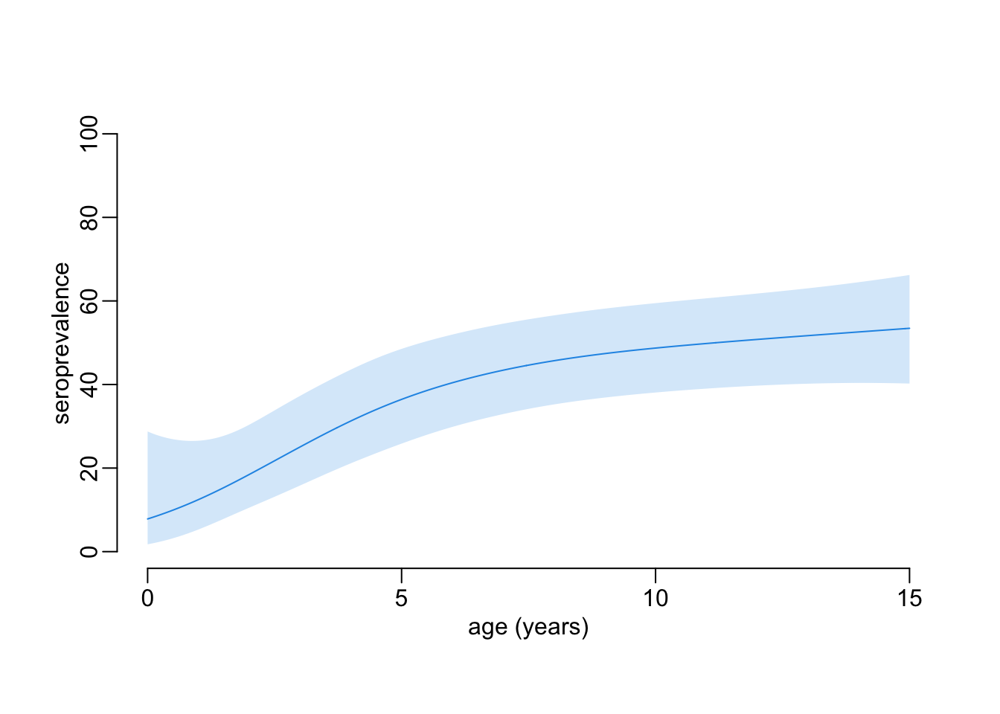
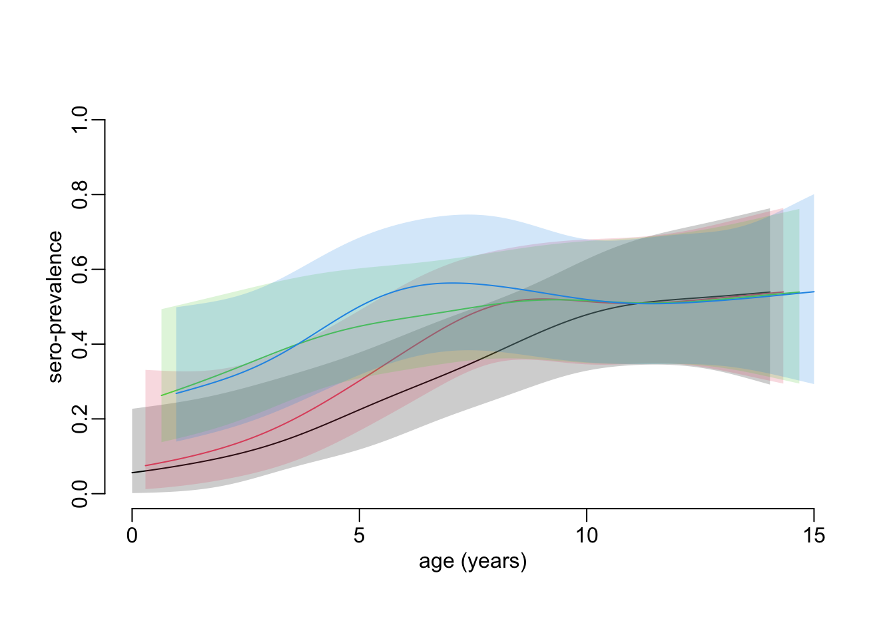
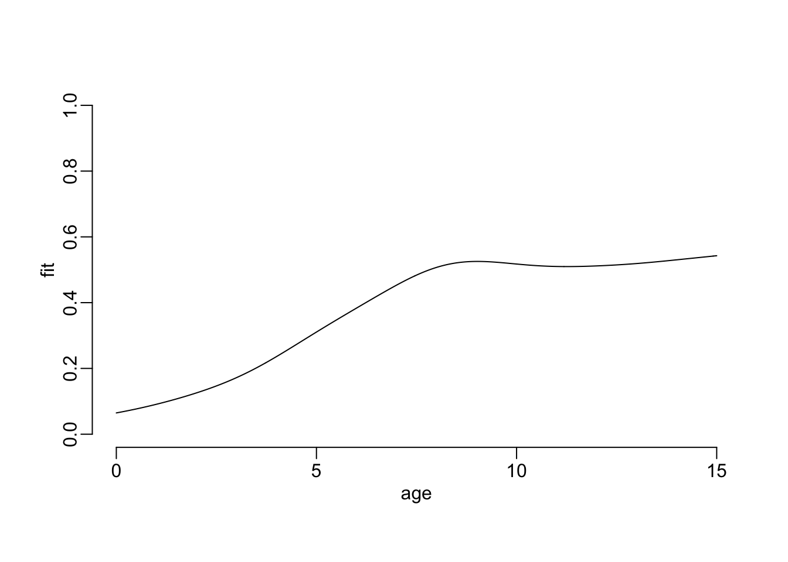
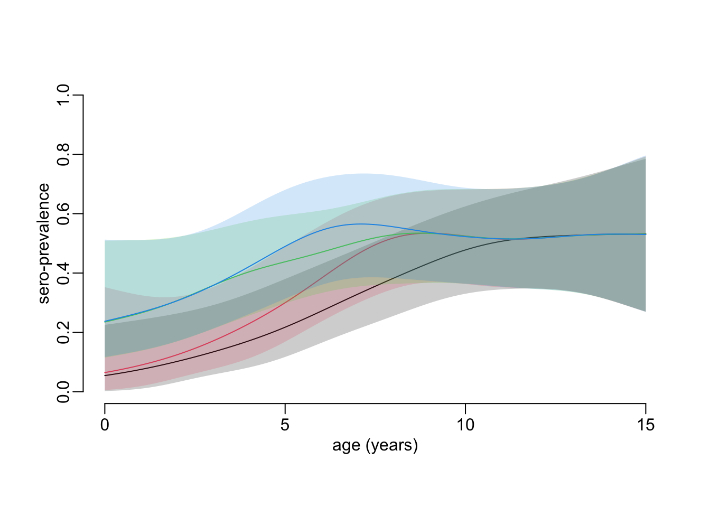
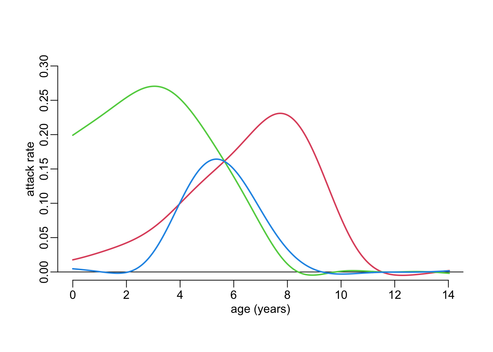
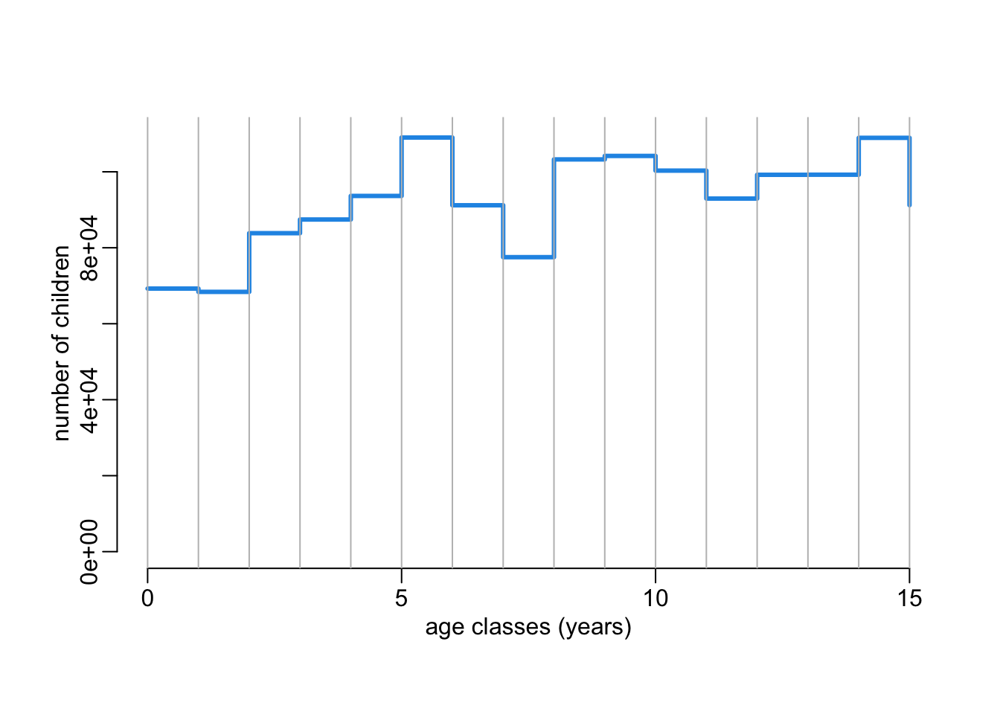
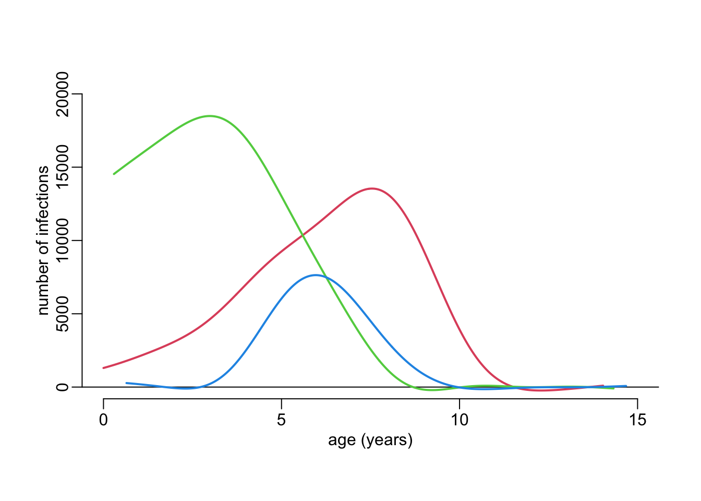

path2data <- "/Users/MarcChoisy/Library/CloudStorage/OneDrive-OxfordUniversityClinicalResearchUnit/GitHub/choisy/hfmd/"
data_file <- paste0(path2data, "hfmd_sero.rds")2023 HCMC HMFD outbreak
1 Global parameters
The path to the data file:
2 Packages
Required packages:
required_packages <- c("dplyr", "stringr", "purrr", "tidyr", "magrittr", "mgcv",
"scam")Installing those that are not installed:
to_inst <- required_packages[! required_packages %in% installed.packages()[,"Package"]]
if (length(to_inst)) install.packages(to_inst)Loading the packages:
library(dplyr)
library(stringr)
library(purrr)Warning: package 'purrr' was built under R version 4.5.1library(tidyr)
library(magrittr)
library(mgcv)
library(scam)3 Utilitary functions
A tuning of the lines() function:
lines2 <- function(...) lines(..., lwd = 2)A tuning of the predict() generic:
predict2 <- function(...) predict(..., type = "response") |> as.vector()A function that shifts the values of the vector x by n positions to the right, keeping the length of the vector constant and filling the first n positions of the vector with NA values:
shift_right <- function(n, x) {
if (n < 1) return(x)
c(rep(NA, n), head(x, -n))
}4 Loading the data
Loading, cleaning and putting the data in shape:
hfmd <- data_file |>
readRDS() |>
as_tibble() |>
mutate(collection = id |>
str_remove(".*-") |>
as.numeric() |>
divide_by(1e4) |>
round(),
col_date2 = as.numeric(col_date),
across(pos, ~ .x > 0))5 Temporally independent age profiles
A function that computes a sero-prevalence age profile with confidence interval for a given collection:
age_profile <- function(data, age_values = seq(0, 15, le = 512), ci = .95) {
model <- gam(pos ~ s(age), binomial, data)
link_inv <- family(model)$linkinv
df <- nrow(data) - length(coef(model))
p <- (1 - ci) / 2
model |>
predict(list(age = age_values), se.fit = TRUE) %>%
c(list(age = age_values), .) |>
as_tibble() |>
mutate(lwr = link_inv(fit + qt( p, df) * se.fit),
upr = link_inv(fit + qt(1 - p, df) * se.fit),
fit = link_inv(fit)) |>
select(- se.fit)
}A function that computes a sero-prevalence age profile with confidence interval for each of the collections of a dataset:
age_profile_unconstrained <- function(data, age_values = seq(0, 15, le = 512),
ci = .95) {
data |>
group_by(collection) |>
group_map(~ age_profile(.x, age_values, ci))
}A function that plots the sero-prevalence profiles with confidence intervals of all the collections:
plot_profiles <- function(x, colors = 1:4, alpha = .2) {
plot(NA, xlim = c(0, 15), ylim = 0:1, xlab = "age (years)", ylab = "sero-prevalence")
walk2(x, colors, ~ with(.x,
{
polygon(c(age, rev(age)), c(lwr, rev(upr)), border = NA,
col = adjustcolor(.y, alpha))
lines(age, fit, col = .y)
}))
}Computing the sero-prevalence age profiles for all the collections:
unconstrained_age_profiles <- age_profile_unconstrained(hfmd)Plotting the sero-prevalence age profiles for all the collections:
plot_profiles(unconstrained_age_profiles)
6 Temporally linked age profiles
6.1 Overview
Ideally we would like to be able to fit a binomial GAM as a function of both age and time, without any constraint on age, but imposing a monotonic increase as a function of time. Since this is not possible at the moment with the tools currently available, we propose a solution in 2 successive steps that we would ideally like them to be as so:
- Step 1: fitting an unconstrained binomial GAM to seropositivity as a function of age for each time point.
- Step 2: fitting a monotonically increasing beta GAM to the predictions of the unconstrained binomial GAM as a function of time for each age value.
Since there is currently no tool available that allows to fit a constrained beta GAM, we have to decompose the second step into 2 steps which consist in:
- Step 2a: converting proportions predicted by the unconstrained binomial GAM into Bernoulli realizations on which to fit a monotonically increasing binomial GAM as a function of time for each age value from which to generate predictions with confidence interval.
- Step 2b: smoothing out the stochasticity introduced by the conversion of the proportions into Bernoulli realizations by fitting unconstrained beta GAMs to the predictions and confidence interval bounds of the constrained binomial GAM as functions of age for each time point.
6.2 Algorithm
- Step 1 (age profile): for each time point (i.e. samples collection):
- fit an unconstrained binomial GAM to seropositivity as a function of age
- convert population seroprevalence into individual seropositivity realizations: for each value of a large vector of age values:
- generate the prediction + confidence interval
- from each of the rate values of the prediction and confidence interaval lower and upper bounds, generate random realizations of a Bernoulli process to convert population seroprevalence into individual seropositivity
- Step 2a (epidemiological time): for each value of age:
- fit a monotonically increasing binomial GAM to the Bernoulli realizations as a function of time
- for each time point: generate the prediction + confidence interval
- Step 2b (smoothing out the stochasticity introduced by the seroprevalence to seropositivity conversion): for each time point fit an unconstrained beta GAMs to the predictions and confidence interval bounds of step 2a as a function of age
6.3 Implementation
A function that computes a sero-prevalence age profile with confidence interval for each of the collections of a dataset, with a temporal constraint between the collections:
age_profile_constrained <- function(data, age_values = seq(0, 15, le = 512),
ci = .95, n = 100) {
mean_collection_times <- data |>
group_by(collection) |>
summarise(mean_col_date = mean(col_date2)) |>
with(setNames(mean_col_date, collection))
data |>
# Step 1:
group_by(collection) |>
group_modify(~ .x |>
age_profile(age_values, ci) |>
mutate(across(c(fit, lwr, upr), ~ map(.x, ~ rbinom(n, 1, .x))))) |>
ungroup() |>
mutate(collection_time = mean_collection_times[as.character(collection)]) |>
unnest(c(fit, lwr, upr)) |>
pivot_longer(c(fit, lwr, upr), names_to = "line", values_to = "seropositvty") |>
# Step 2a:
group_by(age, line) |>
group_modify(~ .x %>%
scam(seropositvty ~ s(collection_time, bs = "mpi"), binomial, .) |>
predict2(list(collection_time = mean_collection_times)) %>%
tibble(collection_time = mean_collection_times,
seroprevalence = .)) |>
ungroup() |>
# Step 2b:
group_by(collection_time, line) |>
group_modify(~ .x |>
mutate(across(seroprevalence, ~ gam(.x ~ s(age), betar) |>
predict2()))) |>
ungroup() |>
pivot_wider(names_from = line, values_from = seroprevalence) |>
group_by(collection_time) |>
group_split()
}Computing a sero-prevalence age profile with confidence interval for each of the collections, with a temporal constraint between the collections(takes 1’20”):
constrained_age_profiles <- age_profile_constrained(hfmd)Plotting the sero-prevalence age profiles with temporal constraint between collections:
plot_profiles(constrained_age_profiles)
7 Correcting for aging
Here we want to apply the constraint by accounting for the fact that age increases between samples collection. This means that the above Step 2a needs to be adjusted accordingly. More specifically, the monotonically increasing binomial GAM should not be applied for each age value, but for each cohort, a cohort being defined by a given age in the first collection time. The code below is the above function age_profile_constrained_cohort() that has been adapted accordingly. For easier comparison, we’ve left the old code:
age_profile_constrained_cohort <- function(data, age_values = seq(0, 15, le = 512),
ci = .95, n = 100) {
dpy <- 365 # number of days per year
mean_collection_times <- data |>
group_by(collection) |>
summarise(mean_col_date = mean(col_date2)) |>
with(setNames(mean_col_date, collection))
#START#################################################################################
# Code to translate age and collection time into cohort and vice versa:
cohorts <- cumsum(c(0, diff(mean_collection_times))) |>
divide_by(dpy * mean(diff(age_values))) |>
round() |>
map(shift_right, age_values)
age_time <- map2(mean_collection_times, cohorts,
~ tibble(collection_time = .x, cohort = .y))
age_time_inv <- age_time |>
map(~ cbind(.x, age = age_values)) |>
bind_rows() |>
na.exclude()
#END###################################################################################
data |>
# Step 1:
group_by(collection) |>
group_modify(~ .x |>
age_profile(age_values, ci) |>
mutate(across(c(fit, lwr, upr), ~ map(.x, ~ rbinom(n, 1, .x))))) |>
#START#################################################################################
# First modification:
# ungroup() |>
# mutate(collection_time = mean_collection_times[as.character(collection)]) |>
group_split() |>
map2(age_time, bind_cols) |>
bind_rows() |>
#END###################################################################################
unnest(c(fit, lwr, upr)) |>
pivot_longer(c(fit, lwr, upr), names_to = "line", values_to = "seropositvty") |>
# Step 2a:
#START#################################################################################
# Second modification:
# group_by(age, line) |>
filter(cohort < max(age) - diff(range(mean_collection_times)) / dpy) |>
group_by(cohort, line) |>
#END###################################################################################
group_modify(~ .x %>%
scam(seropositvty ~ s(collection_time, bs = "mpi"), binomial, .) |>
predict2(list(collection_time = mean_collection_times)) %>%
tibble(collection_time = mean_collection_times,
seroprevalence = .)) |>
ungroup() |>
# Step 2b:
#START#################################################################################
# Third modification:
left_join(age_time_inv, c("cohort", "collection_time")) |>
#END###################################################################################
group_by(collection_time, line) |>
group_modify(~ .x |>
mutate(across(seroprevalence,
~ gam(.x ~ s(age), betar) |>
predict2()))) |>
ungroup() |>
pivot_wider(names_from = line, values_from = seroprevalence) |>
group_by(collection_time) |>
group_split()
}Computing the new sero-prevalence profile (taking another 1’20”):
constrained_age_profiles_cohort <- age_profile_constrained_cohort(hfmd)Plotting the sero-prevalence age profiles with temporal constraint between collections, across cohort:
plot_profiles(constrained_age_profiles_cohort)
7.1 With extrapolation
Here is an alternative version of the above age_profile_constrained_cohort() function that performs extrapolation over the whole age range for each time point. Same as before, we highlight the code changes in step 2b:
age_profile_constrained_cohort2 <- function(data, age_values = seq(0, 15, le = 512),
ci = .95, n = 100) {
dpy <- 365 # number of days per year
mean_collection_times <- data |>
group_by(collection) |>
summarise(mean_col_date = mean(col_date2)) |>
with(setNames(mean_col_date, collection))
cohorts <- cumsum(c(0, diff(mean_collection_times))) |>
divide_by(dpy * mean(diff(age_values))) |>
round() |>
map(shift_right, age_values)
age_time <- map2(mean_collection_times, cohorts,
~ tibble(collection_time = .x, cohort = .y))
age_time_inv <- age_time |>
map(~ cbind(.x, age = age_values)) |>
bind_rows() |>
na.exclude()
data |>
# Step 1:
group_by(collection) |>
group_modify(~ .x |>
age_profile(age_values, ci) |>
mutate(across(c(fit, lwr, upr), ~ map(.x, ~ rbinom(n, 1, .x))))) |>
group_split() |>
map2(age_time, bind_cols) |>
bind_rows() |>
unnest(c(fit, lwr, upr)) |>
pivot_longer(c(fit, lwr, upr), names_to = "line", values_to = "seropositvty") |>
# Step 2a:
filter(cohort < max(age) - diff(range(mean_collection_times)) / dpy) |>
group_by(cohort, line) |>
group_modify(~ .x %>%
scam(seropositvty ~ s(collection_time, bs = "mpi"), binomial, .) |>
predict2(list(collection_time = mean_collection_times)) %>%
tibble(collection_time = mean_collection_times,
seroprevalence = .)) |>
ungroup() |>
# Step 2b:
left_join(age_time_inv, c("cohort", "collection_time")) |>
group_by(collection_time, line) |>
group_modify(~ .x |>
right_join(tibble(age = age_values), "age") |> ### added
arrange(age) |> ### added
mutate(across(seroprevalence,
~ gam(.x ~ s(age), betar) |>
predict2(list(age = age_values))))) |> ### modified
ungroup() |>
pivot_wider(names_from = line, values_from = seroprevalence) |>
group_by(collection_time) |>
group_split()
}Let’s compute the values (another 1’20”):
constrained_age_profiles_cohort2 <- age_profile_constrained_cohort2(hfmd)And here is what the plot now looks like:
plot_profiles(constrained_age_profiles_cohort2)
8 Attack rates
Computing the attack rates:
attack_rates <- map2(head(constrained_age_profiles_cohort2, -1),
constrained_age_profiles_cohort2[-1],
~ left_join(na.exclude(.x), na.exclude(.y), "cohort") |>
mutate(attack = (fit.y - fit.x) / (1 - fit.x)))A function to plot the frame of a plot:
plot_frame <- function() {
plot(NA, xlim = c(0, 14), ylim = c(0, .3),
xlab = "age (years)", ylab = "attack rate")
abline(h = 0)
}Plotting the attack rates using age in the first, second and third time points for the three lines respectively:
cols <- 2:4
plot_frame()
walk2(attack_rates, cols, ~ with(.x, lines2(age.x, attack, col = .y)))
Plotting the attack rates using age in the first time point for the three lines:
plot_frame()
walk2(attack_rates, cols, ~ with(.x, lines2(cohort, attack, col = .y)))
9 Expected incidences
Here we want to compute the expected incidence as
\[ (1 - p)\times \rho \times N \] where \(p\) is the sero-prevalence at at time \(t\) for age \(a\), \(\rho\) is the attack rate for age \(a\) between time points (i.e. collection) \(t\) and \(t+1\), and \(N\) is the size of the population of age \(a\). Let’s first load the 2019 Vietnamese population census and extracting data for the province of HCMC:
census2019 <- "/Users/MarcChoisy/Library/CloudStorage/OneDrive-OxfordUniversityClinicalResearchUnit/data/census VNM 2019/census2019.rds" |>
readRDS() |>
filter(province == "Thành phố Hồ Chí Minh")Computing the age pyramid for the province of HCMC:
age_structure <- census2019 |>
group_by(age) |>
summarise(n = sum(n)) |>
mutate(across(age, ~ stringr::str_remove(.x, " tuổi| \\+") |> as.integer())) |>
arrange(age) |>
filter(age < 17)Vizualizing the age pyramid:
with(age_structure,
plot(age - 1, n, type = "s", ylim = c(0, 110000), col = 4, lwd = 3,
xlab = "age classes (years)", ylab = "number of children"))
abline(v = 0:15, col = "grey")
Modelling the pyramid:
mod <- lm(n ~ age, age_structure)Computing the expected incidences:
incidences <- map(attack_rates,
~ mutate(.x, incidence = (1 - fit.x) * attack *
predict(mod, list(age = age.x))))Vizualizing the expected incidences:
plot(NA, xlim = c(0, 15), ylim = c(0, 20000),
xlab = "age (years)", ylab = "number of infections")
abline(h = 0)
walk2(incidences, cols, ~ with(.x, lines2(age.x, incidence, col = .y)))
Now that we have the expected age profiles of incidence between the three successive time points, we want to compare it with the age profiles of hospitalization between the same time points. By taking the ratio of the first of the second one, we can have an idea of the probability of severity as a function of age.